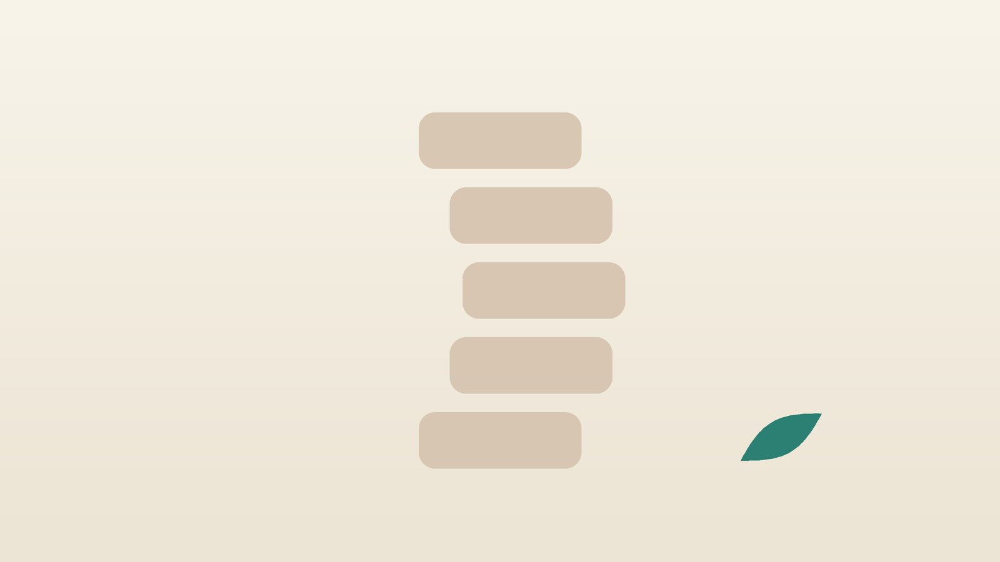

건강 칼럼 · 허리·골반 통증 · 인천 척추측만증 한의원
어깨 높이가 다르고 등이 휘어 보인다면, 척추측만증 확인과 한방 관리

우리 아이 등, 이런 모습인가요?
- 양쪽 어깨 높이가 다르다
- 한쪽 날개뼈가 더 튀어나와 보인다
- 허리선의 굴곡이 좌우가 다르거나 골반 한쪽이 높아 보인다
- 앞으로 숙이면 등이나 허리 한쪽이 불룩 솟는다
- 옷을 입으면 한쪽 소매나 치맛단이 더 길어 보인다
- 최근 1년 사이 키가 부쩍 자랐다
이 체크리스트는 진단 도구가 아니라 상담이 필요한지 가늠해 보는 참고용입니다.
척추측만증은 어떻게 진단하나요?
집에서 해 볼 수 있는 선별법이 아담스 전방굴곡검사입니다. 아이가 무릎을 편 채 두 팔을 늘어뜨리고 허리를 숙이면, 뒤에서 등을 수평으로 바라봅니다. 한쪽만 솟아 있다면 척추가 비틀려 있다는 신호이며, 병원에서는 척추측만계로 기울기를 재어 X선 검사가 필요한지 판단합니다.
진단은 서서 찍은 전체 척추 X선에서 가장 많이 기울어진 위아래 척추뼈 사이의 각도, 즉 콥각(Cobb angle)으로 합니다. 국제측만증연구학회(SRS) 기준으로 콥각 10도 이상이면 척추측만증으로 진단합니다. 성장기에는 보통 4~6개월 간격으로 X선을 다시 찍으며, 키가 빨리 크는 시기, 초경 전 여학생, 처음 각도가 큰 경우에 진행 위험이 높습니다. 일반적으로 성장이 남은 시기에 25도 안팎을 넘으면 보조기를, 45~50도를 넘으면 수술을 정형외과에서 상의합니다.
정형외과 진료와 정밀 검사가 먼저 필요한 신호
- 밤에 깰 정도로 등이 아프거나 통증이 점점 심해진다
- 다리가 저리거나 힘이 빠진다
- 대소변 습관이 갑자기 바뀌었다
- 10세 이전에 발견됐거나 몇 달 사이 휜 모습이 눈에 띄게 커졌다
- 피부에 커피색 반점이 여러 개 있거나 등 한가운데 털, 움푹 팬 곳이 있다
- 숨이 차거나 가슴 모양이 크게 비대칭이다
특발성 측만은 대개 심하게 아프지 않아, 통증이나 신경 증상이 뚜렷하면 척수 이상 같은 다른 원인을 MRI 등으로 확인합니다.
한의학은 척추측만증을 어떻게 보나요?
한의학 고전에는 지금의 척추측만증과 정확히 맞는 병명이 따로 정리되어 있지 않습니다. 다만 한의학은 근육과 힘줄인 근(筋)을 간(肝)이, 뼈를 신(腎)이 주관한다고 보아, 성장기에 뼈가 빨리 자라는 동안 근육과 힘줄이 균형 있게 받쳐 주지 못하면 몸이 한쪽으로 기울고 뭉친다고 해석할 수 있습니다.
휜 쪽과 반대쪽 근육은 길이와 긴장이 달라져 굳기 쉬워, 오래 당기고 뭉친 곳을 기혈이 막힌 것으로 보고 풀어 주는 치료를 해 왔습니다. 그래서 한방 관리의 목표는 각도를 바꾸는 것이 아니라, 굳은 근육과 통증을 풀고 바른 자세를 오래 유지할 체력을 기르는 데 있습니다.
어떤 상황에 해당할까?
1. 성장기 경도 측만 키가 크는 중인 가벼운 측만
- 이런 분에게 많아요
- 10~15세, 콥각 10~25도 안팎
- 나타나는 모습
- 겉으로 어깨·골반 차이가 보이지만 통증은 거의 없다
- 함께 오는 몸의 신호
- 급성장, 오래 앉아 있는 생활
- 진찰에서 보이는 모습
- 전방굴곡 때 한쪽 등이 솟고 X선 각도가 작음
- 치료 방향
- 정형외과 X선 추적을 지키며 자세와 체력을 관리하는 방향
- 오늘부터 해 볼 것
- 정해진 날짜에 X선 추적 검사를 꼭 받으세요.
2. 보조기 착용 중 보조기로 진행을 막는 시기
- 이런 분에게 많아요
- 성장이 남아 있고 각도가 25도 안팎을 넘은 청소년
- 나타나는 모습
- 보조기를 오래 차서 갈비뼈·골반이 눌리고 땀이 찬다
- 함께 오는 몸의 신호
- 피부 쓸림, 허리·등 뻐근함, 스트레스
- 진찰에서 보이는 모습
- 보조기 닿는 부위가 붉고 근육이 굳음
- 치료 방향
- 보조기 착용 시간을 지키도록 근육 불편과 피부를 돌보는 방향
- 오늘부터 해 볼 것
- 보조기 아래에는 이음새 없는 얇은 면 티셔츠를 입혀 주세요.
3. 간신부족·근골불리(肝腎不足·筋骨不利) 근력이 약해 쉽게 지치는 아이
- 이런 분에게 많아요
- 마르고 체력이 약하며 운동을 싫어하는 아이
- 나타나는 모습
- 조금만 앉아 있어도 몸이 한쪽으로 무너지고 등이 아프다고 한다
- 함께 오는 몸의 신호
- 쉽게 지침, 다리 저림 없이 뻐근함
- 진찰에서 보이는 모습
- 등과 허리 근육이 약하고 맥이 가늚
- 치료 방향
- 근육과 뼈를 받치는 기운을 북돋는 방향 (독활기생탕·육미지황탕 계열)
- 오늘부터 해 볼 것
- 하루 30분 이상 걷기나 수영으로 몸통 근력을 길러 주세요.
4. 성인 측만·기혈어체(氣血瘀滯) 통증이 오는 성인
- 이런 분에게 많아요
- 성장이 끝난 뒤 측만이 남아 있는 분
- 나타나는 모습
- 오래 서 있으면 허리와 등 한쪽이 당기고 아프다
- 함께 오는 몸의 신호
- 아침 뻣뻣함, 어깨 결림
- 진찰에서 보이는 모습
- 휜 쪽 근육이 단단하고 누름 통증
- 치료 방향
- 뭉친 근육과 순환을 풀어 통증을 줄이는 방향
- 오늘부터 해 볼 것
- 한 자세로 40분을 넘기지 마세요.
한의원에서는 어떻게 진찰하나요?
- X선 기록 확인: 정형외과 X선의 콥각과 촬영 날짜, 성장 단계(뼈 나이, 초경 여부)를 함께 확인합니다.
- 자세 평가: 어깨·날개뼈·골반 높이와 전방굴곡 때 솟는 정도를 사진으로 기록합니다.
- 통증과 근육: 통증 부위와 강도, 휜 쪽과 반대쪽 근육의 긴장과 압통을 살핍니다.
- 생활 문진: 앉는 시간, 가방 무게, 운동 습관, 보조기 착용 시간을 여쭙니다.
침과 추나, 한약으로는 무엇을 관리하나요?
1. 침 치료
초등학생 등 어린 아이에게는 바늘 없는 소아 스티커침을 쓰고, 청소년과 성인은 진찰 후 침 치료를 합니다.
- 협척(夾脊): 등뼈 가시돌기 양옆으로 손가락 반 너비 떨어진 자리. 뭉친 척추 주변 근육을 풉니다.
- 신수(腎俞): 허리 둘째 척추뼈 높이에서 양옆으로 손가락 두 개 너비. 허리를 받치는 힘을 돕습니다.
- 위중(委中): 무릎 뒤 오금 가로 주름의 한가운데. 허리와 등의 통증에 씁니다.
- 양릉천(陽陵泉): 무릎 바깥 아래, 종아리뼈 머리 앞아래의 오목한 곳. 근육과 힘줄이 당기는 증상에 씁니다.
- 견정(肩井): 목뿌리와 어깨 끝 사이의 가운데. 한쪽으로 올라간 어깨의 뭉침을 풉니다.
2. 약침과 추나 요법
약침은 통증이 있는 성인에게 진찰 후 시행하며, 어린이에게는 쓰지 않습니다. 추나 요법과 온열 요법도 시행하며, 굳은 근육과 관절을 부드럽게 해 통증과 자세를 관리하는 목적입니다. 추나로 휜 각도를 교정한다고 단정할 수는 없어, 시행 여부는 X선과 성장 단계를 확인한 뒤 상담해 정합니다.
3. 한약
체력이 약해 자세가 쉽게 무너지거나 통증이 잦은 경우에 탕약을 함께 씁니다. 아이에게는 쓴맛이 덜한 약재 위주로 짓고, 먹기 힘들어하면 단것을 조금 타 주셔도 됩니다. 돌 전 아기에게 꿀은 금물입니다. 한약 역시 각도를 바꾸는 치료가 아니며, 복용 중인 약은 알려 주시면 확인해 처방합니다. 한약은 원장이 원내 탕전실에서 약재 선별부터 달이는 과정까지 직접 관리하며, 10일분씩 처방해 복용 경과를 보고 약재 구성과 양을 조절합니다.
원장님이 네이버 블로그에 진료 이야기와 건강 정보를 꾸준히 올리고 있습니다. 더 많은 이야기는 블로그에서 확인해 보세요.
블로그 보기관리는 어떤 순서로 진행되나요?
- 정형외과 확인 X선으로 콥각과 성장 단계를 확인하고 추적 일정을 정합니다.
- 첫 한방 진료 자세 사진과 통증 정도를 기록하고 관리 계획을 세웁니다.
- 1~3개월 침과 추나로 통증과 뭉침을 다루고 집에서 할 운동을 익힙니다.
- 추적 관찰 정형외과 X선 일정에 맞춰 각도 변화를 확인하고, 자세 사진과 통증을 함께 비교합니다.
성장기 측만은 키가 다 클 때까지 진행을 지켜보는 것이 핵심이라, 한방 관리 기간과 상관없이 정형외과 추적 검사는 꼭 이어 가야 합니다.
집에서 하는 자세·운동 관리
- 추적 일정: 키가 빨리 크는 시기에는 X선 추적 날짜를 미루지 않는 것이 가장 중요합니다.
- 몸통 근력: 걷기, 수영처럼 몸통을 고르게 쓰는 운동을 꾸준히 합니다. 측만증 특화 운동은 근거가 아직 충분하지 않아 전문가 지도 아래 합니다.
- 앉는 자세: 의자 깊숙이 앉아 두 발을 바닥에 붙이고, 40분마다 일어나 기지개를 켭니다.
- 가방: 가방은 양쪽 어깨로 메고, 몸무게의 10%를 넘지 않게 정리합니다.
- 집에서 하는 지압: 등이 뻐근할 때 부모가 오금의 위중 자리와 어깨의 견정 자리를 엄지로 10초씩 지그시 눌러 주세요. 척추뼈 위를 세게 누르지는 않습니다.
다른 진료가 함께 필요한 경우
- 처음 발견했다면 정형외과에서 서서 찍는 전체 척추 X선을 먼저 받으세요.
- 성장기에는 정형외과 추적 검사와 보조기 처방을 반드시 따르세요.
- 통증이나 신경 증상이 있다면 정밀 검사를 받으세요.
- 각도가 크다면 척추외과에서 수술 상담을 받으세요.
자주 묻는 질문 Q&A
- Q1. 척추측만증은 자세가 나빠서 생기나요?
- 대부분은 원인을 알 수 없는 특발성이며, 나쁜 자세만으로 생기지는 않습니다.
- Q2. 추나 치료로 휜 척추가 펴지나요?
- 추나는 통증과 근육 긴장, 자세를 관리하는 치료이며 휜 각도를 교정한다고 단정할 수 없습니다.
- Q3. X선은 얼마나 자주 찍어야 하나요?
- 성장기에는 보통 4~6개월 간격이지만 각도와 성장 단계에 따라 정형외과에서 정합니다.
- Q4. 보조기는 언제 차나요?
- 일반적으로 성장이 남아 있고 각도가 25도 안팎을 넘으면 고려하며, 정형외과에서 결정합니다.
- Q5. 키가 다 크면 더 휘지 않나요?
- 진행이 크게 느려지지만, 각도가 크면 어른이 되어서도 조금씩 진행할 수 있습니다.
- Q6. 운동을 해도 되나요?
- 대부분 괜찮으며, 몸통을 고르게 쓰는 운동이 좋습니다.
- Q7. 아이가 침을 무서워해요.
- 어린 아이에게는 피부에 붙이는 소아 스티커침을 쓰고, 원치 않으면 운동과 생활 관리로 진행합니다.
- Q8. 교통사고 뒤 허리가 아픈데 측만이 있어요.
- 자동차보험 진료가 가능하며, X선 결과를 함께 알려 주세요.
문원열 대표원장한의사 · 365스마일한의원
임상 경력 15년, 인천 서구 가정동에서 개원 후 10년째 진료하고 있으며, FCST 턱관절학회·연부조직학회·침도학회 등에서 활동합니다. 아픈 곳만이 아니라 증상의 원인을 찾아 진료합니다.
진료 안내
- 진료시간
- 평일 09:00~20:00 (점심시간 13:00~14:00, 접수 마감 19:30)
토·일·공휴일 09:00~15:00 (접수 마감 14:30) - 주소
- 인천광역시 서구 가경주로 46, 2층 (가정동)
인천2호선 가정중앙시장역 인근
영상으로 길 안내 보기 → - 주차
- 한의원 건물 바로 앞 1층 도원주차장
- 예약
- 예약 바로가기 또는 전화 예약
진료시간은 사정에 따라 바뀔 수 있으니 방문 전 전화로 확인해 주세요.
함께 읽으면 좋은 칼럼
건강 칼럼 전체 보기 →


참고 자료
- Weinstein SL, et al. Effects of Bracing in Adolescents with Idiopathic Scoliosis. New England Journal of Medicine, 2013 — 원문
- Negrini S, et al. 2016 SOSORT guidelines: orthopaedic and rehabilitation treatment of idiopathic scoliosis during growth. Scoliosis and Spinal Disorders, 2018
- 질병관리청 국가건강정보포털 — 원문
※ 이 글은 일반적인 건강 정보이며, 개인의 상태에 따라 치료 방법과 결과는 다를 수 있습니다. 정확한 진단과 치료는 진료를 통해 결정됩니다. 침·약침 시술 후 드물게 멍, 통증 등이 생길 수 있습니다.